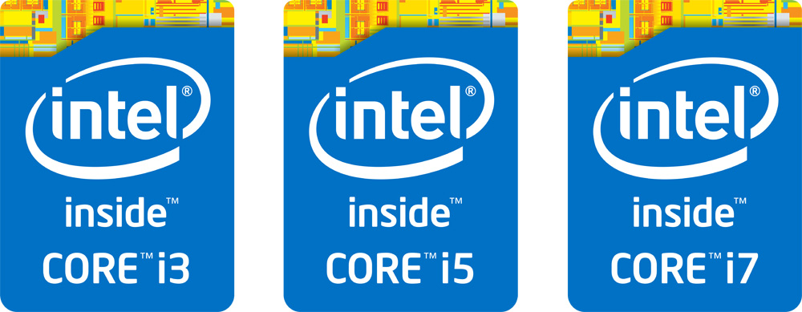
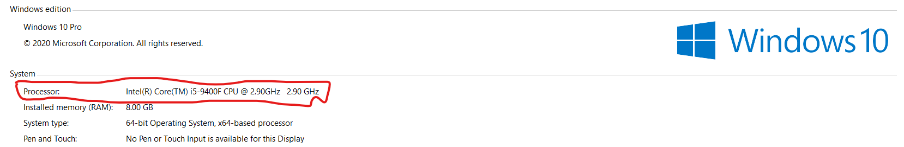

Random access Memory(RAM)


Random Access Memory in shot RAM is your computer’s short-term memory. Without a RAM your files, programs or any type of stream won’t work. A RAM is the working space of your computer.
RAM allows us to access over multiple program at once with speed. The better the RAM faster your program works. There are different RAM’s the speed of the RAM is measured GB. There is 4GB
and 8GB which is present in all devices, Then there is 1GB, 2GB and 6GB which is present only in mobiles and tablets, After that there is 8GB, 16GB ,32GB and 64GB which is present in gaming
laptops and pc and also super computers. For identifying the how much does your laptop or desktop has you have to use the same shown for identifying your processor
How to find your computer’s RAM:-
There will be sticker Like one of these

OR
Right click on your ‘This PC’ on the homepage and click on properties

And this window will open
